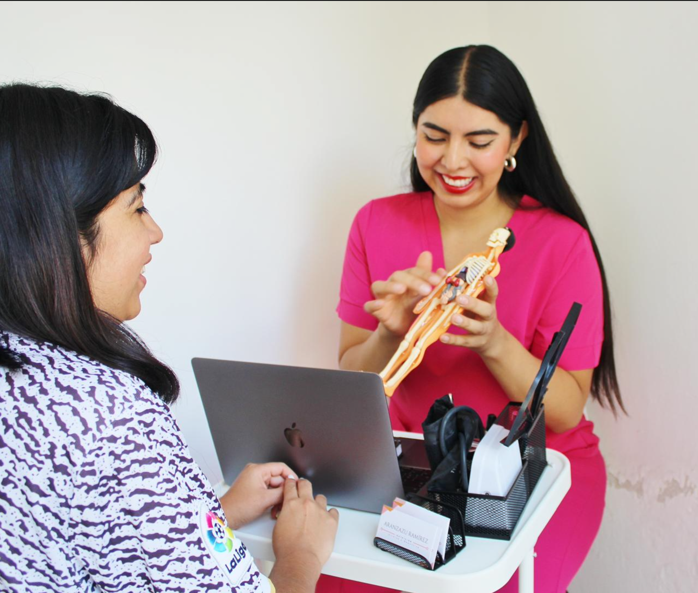
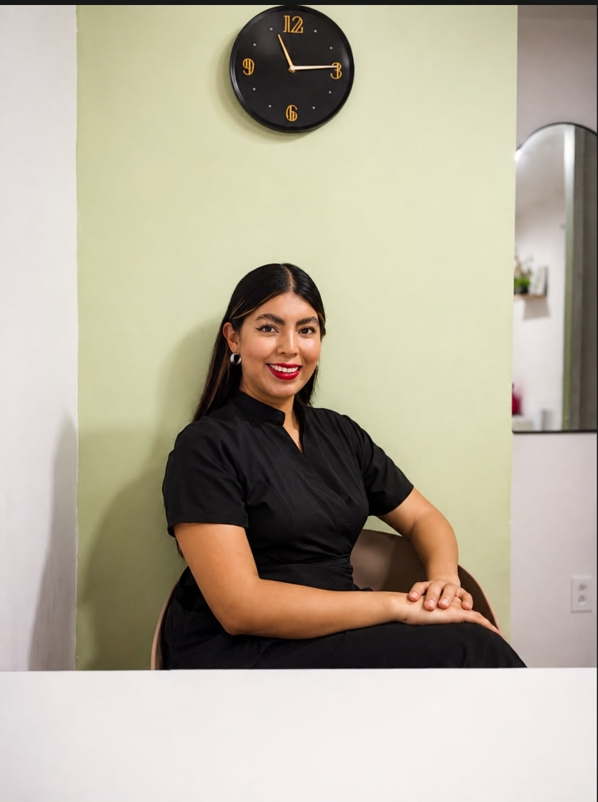
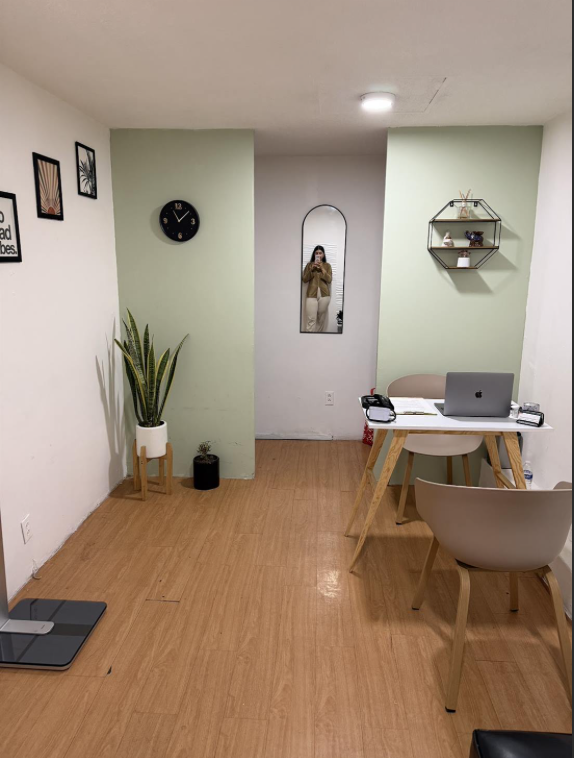

Nutrición clínica
Valoración completa para tu objetivo de salud, con estudios cuando hacen falta y un plan que respeta tus condiciones y tus gustos.
Ciudad de México
Soy Aranzazu Ramírez, nutrióloga deportiva y clínica.
Nutrición basada en evidencia, adaptada a tu vida real. Planes personalizados, seguimiento cercano y hábitos que puedas disfrutar y mantener, sin listas de alimentos prohibidos.

Calificación en Google
Calificaciones
Opciones de atención

Sobre mí
Soy nutrióloga deportiva y clínica, y acompaño a personas que quieren cambiar su composición corporal, rendir mejor en su entrenamiento o, simplemente, volver a llevarse bien con la comida.
Mi consulta parte de algo muy sencillo: escucharte y entender cómo es tu día, para construir estrategias que realmente puedas llevar a tu vida.
Me gusta explicar y que entiendas el porqué de cada recomendación. Por eso, no solo hablamos de alimentación, sino también de suplementación, hidratación, descanso, emociones y entrenamiento, siempre desde la evidencia.
Y fuera del consultorio, probablemente me encuentres entrenando, gozando de la comida o simplemente disfrutando de una vida activa.
Consultas
Cada proceso se arma contigo. Escríbeme por WhatsApp y te comparto la información de la consulta que te corresponde.
Valoración completa para tu objetivo de salud, con estudios cuando hacen falta y un plan que respeta tus condiciones y tus gustos.
Alimentación alrededor de tu entrenamiento: qué comer antes y después, hidratación, electrolitos y estrategias para volumen o definición.
El mismo acompañamiento a distancia, estés donde estés. Ideal si viajas, si entrenas con horarios diferentes o si no vives cerca del consultorio.
Menús versátiles, prácticos y accesibles, con recetas sencillas que puedes dejar listas desde la noche anterior. El plan se arma escuchando tus necesidades y tus objetivos.
Revisamos cómo va tu cuerpo y cómo te sientes, ajustamos lo que haga falta y celebramos lo que ya lograste. El seguimiento es la parte que sostiene todo lo demás.
De la consulta a tu día
Toca cualquiera para verlo en grande. Son algunos de los temas que aparecen constantemente en consulta.
Recetas
Recetas sencillas, prácticas y pensadas para disfrutar la comida.
Opiniones
Contacto
Escríbeme por WhatsApp y platicamos qué necesitas. Te comparto la información de la consulta y buscamos el horario que mejor te acomode.
Puedes tocar cualquiera de las ubicaciones para abrirla directamente en Google Maps.
